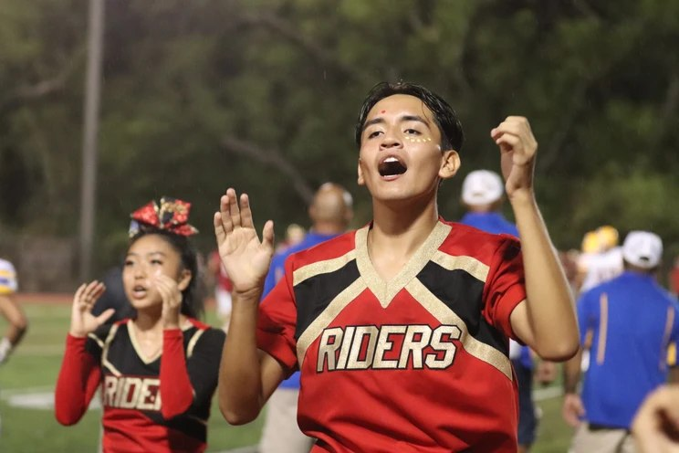

Sport
Cheer
Sideline and stunt, where the shot is decided before it happens.
Sport
The work
Stunt, peak height

Sideline
Toe touch
Chant
Pom, portrait
Sport
Sideline and stunt, where the shot is decided before it happens.
